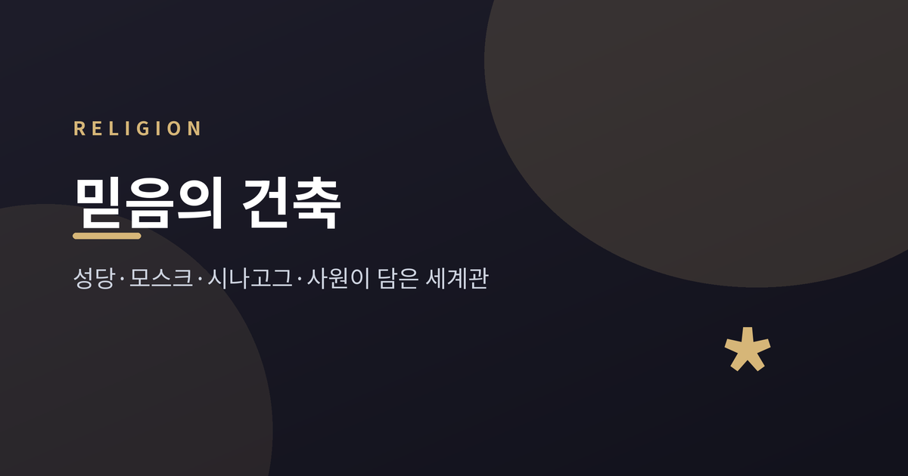
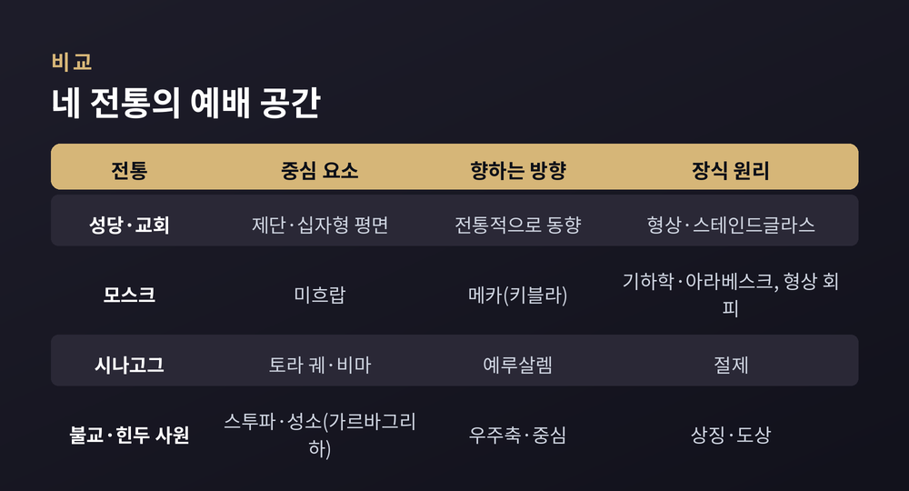
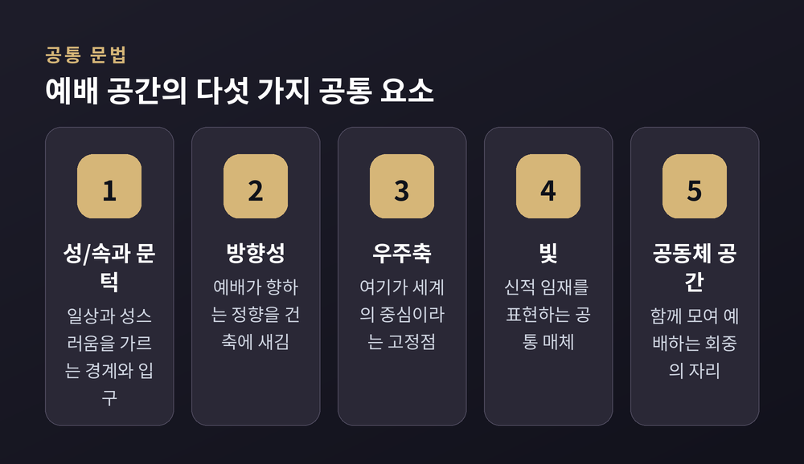
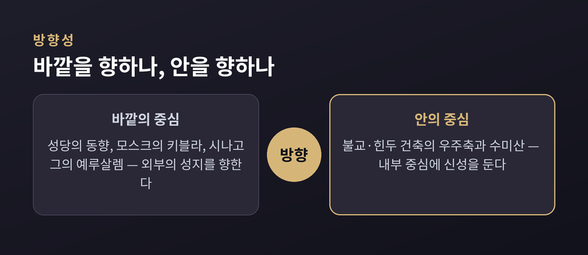

성당·모스크·시나고그·사원에 담긴 믿음

이번 글에서는 세계 종교의 예배 공간이 어떤 원리로 지어지는지를 정리해 보겠습니다. 성당, 모스크, 시나고그, 그리고 불교·힌두교 사원을 함께 놓고 봅니다. 한 줄로 먼저 답하자면, 예배 공간은 그 종교의 세계관을 건축으로 옮겨 적은 문서입니다. 신을 어떻게 바라보느냐가 다르면, 벽과 빛과 방향도 달라집니다.
특정 종교의 우열을 가리거나 어느 한쪽을 권하려는 글이 아닙니다. 네 전통을 가능한 한 공정하게, 건축의 언어로만 비교해 보려 합니다.
종교학자 미르체아 엘리아데는 『성과 속(The Sacred and the Profane)』(1957)에서 한 가지 틀을 제시합니다.
평범한 공간은 균질합니다. 어느 지점도 다른 지점보다 특별하지 않습니다.
그런데 성스러움이 드러나는 순간, 그 균질한 혼돈 속에 '고정점'이 생깁니다.
엘리아데는 이 고정점이 생겨야 비로소 방향을 잡고 "세계를 세운다"고 보았습니다. 예배 공간은 바로 그 중심을 물리적으로 만들어내는 장치인 셈입니다.
그가 강조한 또 하나의 개념이 '문턱'입니다. 문턱은 두 세계를 가르는 경계인 동시에, 속(俗)에서 성(聖)으로 건너가는 통로이기도 합니다. 그래서 많은 예배 공간이 입구, 정문, 전실, 정화 의식 같은 '경계' 장치를 강조합니다.
성스러운 공간은 우연히 발견되지 않습니다. 부지 선정, 정화와 봉헌, 경계 설정, 방위에 대한 정향, 그리고 중심축의 설치를 거쳐 의례로 '만들어집니다'. 이 틀을 손에 쥐면, 서로 다른 네 전통이 의외로 같은 문법을 쓰고 있음이 보입니다.
전통 교회는 흔히 십자가를 닮은 십자형(cruciform) 평면을 따릅니다. 초기 그리스도인들은 십자형 교회에 들어가는 행위 자체를 상징으로 받아들였다고 합니다. 예배에 참여함으로써 십자가의 희생을 통한 구원에 동참한다고 여긴 것입니다.
고딕 대성당은 보통 앱스(apse), 트랜셉트(transept), 네이브(nave)로 짜인 십자형 평면을 가집니다. 앱스는 전례상 동쪽 끝의 종단부로, 주 제단이 놓이는 곳입니다. 트랜셉트는 건물을 가로지르는 횡단부로 십자가의 팔을 이룹니다.
방향도 의미를 품습니다. 라틴어 ad orientem은 "동쪽으로"라는 뜻으로, 제단을 동쪽 끝에 두고 정문을 서쪽에 두는 배치를 가리킵니다. 떠오르는 해와 예루살렘을 향한 이 정향은 부활과 그리스도의 재림을 상징합니다.
빛은 또 하나의 언어입니다. 스테인드글라스 창은 색유리와 납선으로 성경 장면과 성인, 상징을 보여주고, 빛이 통과하며 공간의 분위기를 바꿉니다. 방향과 빛이 결합한 사례도 흥미롭습니다. 햇빛을 덜 받는 북쪽 트랜셉트 창에는 흔히 구약(옛 율법) 장면이, 일년 내내 밝은 남쪽 트랜셉트 창에는 신약(새 율법) 장면이 들어간다고 합니다.
다만 한 가지는 신중하게 짚어야 합니다. 동향 배치는 5세기 이후 거의 체계화된 전통적 관습이지만, 절대 규칙은 아닙니다. 제2차 바티칸 공의회 이후 현대 가톨릭에서는 사제가 회중을 마주 보는 versus populum 배치도 널리 쓰입니다.
모스크의 방향은 벽에 파인 벽감 하나로 결정됩니다. 미흐랍(mihrab)이 그것입니다. 미흐랍은 메카 방향, 즉 키블라(qibla)를 가리킵니다. 무슬림은 예배 시 메카의 카바를 향하므로, 미흐랍은 회중 전체의 방향을 정해 주는 건축 장치입니다. 그래서 모스크에서 가장 정교하게 장식되는 표면이 되는 경우가 많습니다.
밖으로는 미너렛(minaret), 곧 첨탑이 모스크의 존재를 알립니다. 이곳에서 예배 시각을 알리는 아잔(adhan)이 선포됩니다. 형태는 지역마다 매우 달라서, 오스만식 가느다란 첨탑부터 북아프리카의 사각 탑까지 폭이 넓습니다.
장식의 원리는 다른 전통과 뚜렷이 갈립니다. 모스크는 구상적 이미지를 피하고(아이코니즘 회피), 기하학 문양과 서예, 아라베스크로 표면을 채웁니다. 돔(dome)은 하늘의 천장을 상징적으로 표현하며, 별형과 식물 문양이 그 상징을 강조합니다.
물도 빠지지 않습니다. 안뜰의 분수는 더운 지방의 휴식이자, 예배 전 의례적 정화(우두)를 위한 자리입니다. 들어가기 전에 몸을 씻는 행위 자체가 엘리아데가 말한 '문턱'의 한 형태라 할 수 있습니다.
'시나고그(synagogue)'는 그리스어로 "모이는 장소"라는 뜻입니다. 히브리어로는 기도의 집, 회중의 집, 학습의 집 등 여러 이름으로 불립니다. 한 공간에서 기도와 모임과 학습이 함께 이루어지는 것입니다.
기원은 보통 기원전 6세기 바빌론 유수와 연결됩니다. 솔로몬 성전이 파괴되고 유배가 이어지자, 중앙 성전이 없는 상태에서 기도와 성경 낭독, 학습에 집중하는 새로운 형태가 필요해졌습니다. 기원후 70년 제2성전 파괴 이후 그 역할은 더 커졌습니다. 희생 제사 대신 기도로 예배하는 흐름 속에서, 시나고그는 일종의 "이동식 예배 체계"로 기능했습니다.
예전엔 성전이 예배의 중심이었습니다. 지금은 성전이 사라진 자리를 시나고그가 영적으로 잇고 있습니다.
그 중심에 토라 궤(Torah ark)가 있습니다. 아슈케나지는 아론 코데시, 세파르디는 헤이칼이라 부릅니다. 토라 두루마리를 보관하는 이 궤는 두루마리 자체 다음으로 거룩한 장소이자 예배의 초점입니다. '아론 코데시'라는 이름은 옛 성전 지성소에 있던 언약궤를 가리키는 것으로, 시나고그가 파괴된 성전의 계승자임을 드러냅니다.
토라 궤는 전통적으로 예루살렘 방향을 향합니다. 흔히 '동쪽 벽'이라 표현하지만, 본질 원칙은 어디까지나 "예루살렘 방향"입니다. 지역에 따라 실제 방위는 달라질 수 있습니다. 그 앞에는 토라를 낭독하는 단인 비마(bimah)가 놓입니다.

불교의 스투파(stupa)는 본래 유골(사리)을 모시는 돔형 무덤에서 출발했습니다. 이후 단순한 봉안을 넘어 불교의 우주관을 담는 구조로 발전했습니다.
상징은 수직으로 쌓입니다. 반구형 돔인 안다(anda)는 우주의 무한함을, 중심 기둥인 야슈티(yasti)는 우주축을 나타냅니다. 이 수직축은 불교 우주의 중심인 수미산(Mount Meru)을 상징합니다. 그 위에 겹쳐진 일산, 곧 차트라(chhatra)는 보호와 부처의 가르침을 뜻합니다.
배치는 만다라(mandala)의 원리를 따릅니다. 수행자를 성스러운 공간의 중심에 두는 우주 도해입니다. 원형 평면을 시계 방향으로 도는 탑돌이를 통해, 수행자는 자신을 우주 질서에 정렬합니다. 불교가 동아시아로 전해지며 이 형태는 다층 탑인 파고다(pagoda)로 진화했습니다. 스투파가 땅에 밀착한 존재감을 강조했다면, 파고다는 수직성을 강조합니다. 그러나 성스러운 대상을 봉안하고 우주축을 상징한다는 본래 목적은 그대로입니다.
힌두교 사원의 심장은 가르바그리하(garbhagriha), 곧 성소입니다. 문자 그대로 "태(胎)의 방"이라는 뜻으로, 신의 거처이자 우주의 핵심을 나타냅니다. 솟아오른 탑인 시카라/비마나는 역시 수미산을 표현하며, 시선을 위로 끌어 하늘과 땅의 연결을 상징합니다.
평면 전체는 바스투-푸루샤-만다라 원리를 따릅니다. 만다라를 64칸 또는 81칸으로 나누고 중앙 칸은 신을 위해 비워 둡니다. 사원은 우주의 축소 모형으로 설계됩니다.
한 가지 덧붙이자면, 일부 자료가 사원 건축의 '에너지'나 치유 효과를 말하기도 합니다만, 이는 검증된 과학적 사실이 아니라 전통적·신앙적 해석으로 보는 편이 옳습니다.

세계관은 서로 다르지만, 건축의 문법에는 반복되는 결이 있습니다.
차이도 분명합니다. 흥미로운 대조 하나를 짚자면, 정향의 방향입니다. 성당·모스크·시나고그가 메카나 예루살렘 같은 '바깥의 도시'를 향한다면, 불교와 힌두교 건축은 만다라의 중심, 곧 '안으로 향하는' 정향을 씁니다.
장식의 태도도 갈립니다. 이슬람과 유대교가 구상 이미지를 절제하는 반면, 기독교 성당은 인물 서사를 적극 활용하고, 힌두 사원은 신상을 성소 중심에 둡니다. 신을 어떻게 표상하는가, 그 신관의 차이가 곧 장식 문법의 차이로 이어집니다.

끝으로 한 가지만 덧붙이겠습니다.
네 전통의 예배 공간은 서로 다른 신을, 서로 다른 방향을 향합니다. 그러나 균질한 세계 한가운데 '여기가 중심'이라는 고정점을 세우려 한 마음만은 닮아 있습니다.
— "예배 공간은 보이지 않는 세계관을 보이는 건축으로 번역한 것이다."
다음에 어느 성당이나 모스크, 시나고그나 사원 앞에 서신다면, 그 건물이 어느 방향을 향하고 어디에 중심을 두었는지 한 번 살펴보시길 권합니다. 벽과 빛과 방향이, 말없이 그 믿음을 들려줄 것입니다.